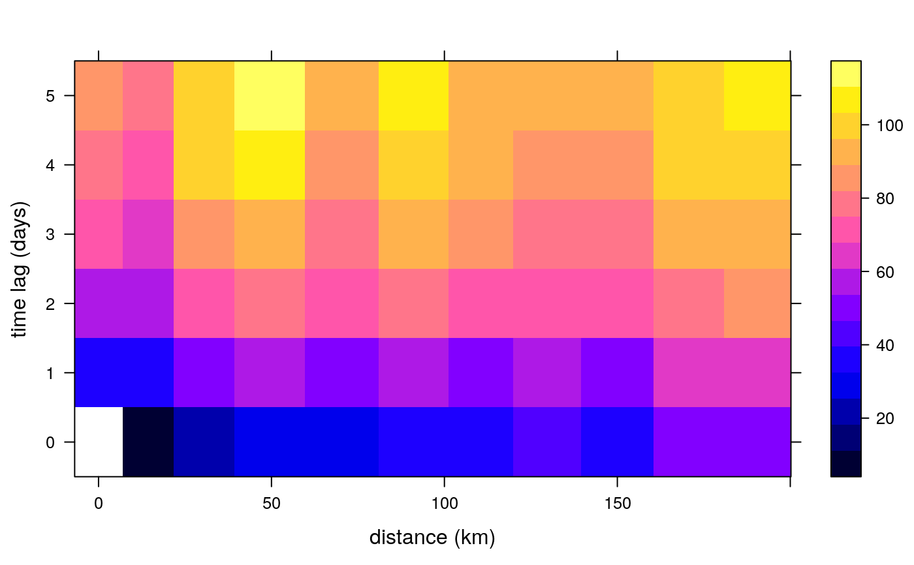

variogramST.RdCalculates the sample variogram from spatio-temporal data.
variogramST(formula, locations, data, ..., tlags = 0:15, cutoff, width = cutoff/15, boundaries = seq(0, cutoff, width), progress = interactive(), pseudo = TRUE, assumeRegular = FALSE, na.omit = FALSE, cores = 1)
| formula | formula, specifying the dependent variable. |
|---|---|
| locations | A STFDF or STSDF containing the variable; kept for
compatibility reasons with variogram, either |
| data | |
| ... | any other arguments that will be passed to the underlying
|
| tlags | integer; time lags to consider or in case |
| cutoff | spatial separation distance up to which point pairs are included in semivariance estimates; as a default, the length of the diagonal of the box spanning the data is divided by three. |
| width | the width of subsequent distance intervals into which
data point pairs are grouped for semivariance estimates, by default the
|
| boundaries | numerical vector with distance interval upper boundaries; values should be strictly increasing |
| progress | logical; if TRUE, show text progress bar |
| pseudo | integer; use pseudo cross variogram for computing time-lagged spatial variograms? -1: find out from coordinates -- if they are equal then yes, else no; 0: no; 1: yes. |
| assumeRegular | logical; whether the time series should be assumed regular. The first time step is assumed to be representative for the whole series. Note, that temporal lags are considered by index, and no check is made whether pairs actually have the desired separating distance. |
| na.omit | shall all |
| cores | number of cores to use in parallel |
The spatio-temporal sample variogram contains besides the fields
np, dist and gamma the spatio-temporal fields,
timelag, spacelag and avgDist, the first of which indicates the time lag
used, the second and third different spatial lags. spacelag is the midpoint in the spatial
lag intervals as passed by the parameter boundaries, whereas avgDist is the average
distance between the point pairs found in a distance interval over all temporal lags (i.e. the
averages of the values dist per temporal lag.) To compute variograms for space lag $h$ and
time lag $t$, the pseudo cross variogram $(Z_i(s)-Z_i+t(s+h))^2$ is averaged over all time
lagged observation sets $Z_i$ and $Z_i+t$ available (weighted by the number of pairs involved).
Cressie, N.A.C., 1993, Statistics for Spatial Data, Wiley.
Cressie, N., C. Wikle, 2011, Statistics for Spatio-temporal Data, Wiley.
Pebesma, E.J., 2004. Multivariable geostatistics in S: the gstat package. Computers \& Geosciences, 30: 683-691.
Edzer Pebesma, Benedikt Graeler
plot.StVariogram,
for variogram models: vgmST,
to fit a spatio-temporal variogram model to a spatio-temporal sample variogram:
fit.StVariogram
# The following spatio-temporal variogram has been calcualted through # vv = variogram(PM10~1, r5to10, width=20, cutoff = 200, tlags=0:5) # in the vignette "st". data(vv) str(vv)#> Classes ‘StVariogram’ and 'data.frame': 66 obs. of 7 variables: #> $ np : num 0 3456 16554 21257 33547 ... #> $ dist : num NA 13.8 29.5 49.1 70.4 ... #> $ gamma : num NA 11 23.4 29.6 31.2 ... #> $ id : chr "lag0" "lag0" "lag0" "lag0" ... #> $ timelag : num 0 0 0 0 0 0 0 0 0 0 ... #> ..- attr(*, "units")= chr "days" #> $ spacelag: num 0 10 30 50 70 90 110 130 150 170 ... #> ..- attr(*, "units")= chr "km" #> $ avgDist : num 0 13.8 29.5 49.1 70.4 ... #> - attr(*, "boundaries")= num [1:11] 0 20 40 60 80 100 120 140 160 180 ...